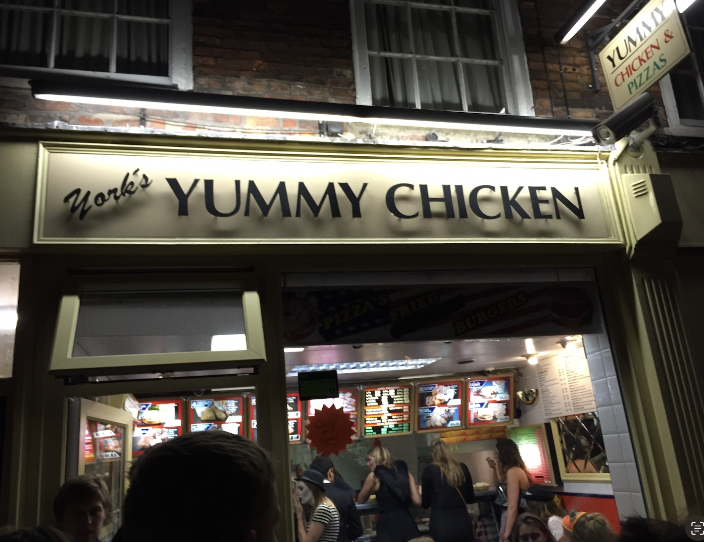
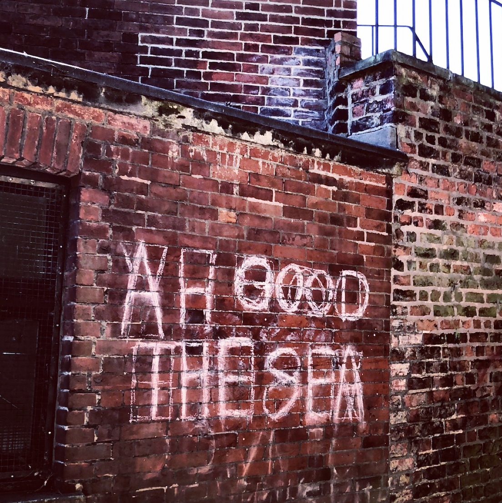

This place's paprika-salted chips are legendary. Or at least, they were legendary in the early to mid 00s. It's still standing, as confirmed by this Google Maps entry. I took the photo in 2014, during what would turn out to be my last but one trip to York. So far.

Turns out this graffiti is so famous that it has its own website. Anyway, I took this photo in 2018 in what was, as it turned out, my last trip to York. So far. I mean, I probably will go again. I bloody well hope so.